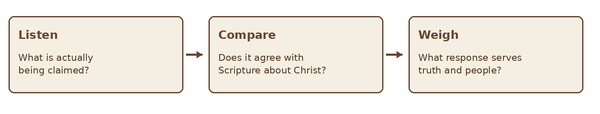
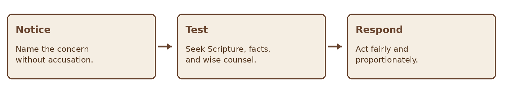

GIFTS OF THE HOLY SPIRIT · BIBLE STUDY
The Gift of Discerning Spirits
A Bible study on testing spiritual claims with truth, humility, and love
STUDY SEVEN • DISCERNMENT
“To another the ability to distinguish between spirits.” — 1 Corinthians 12:10
Discernment has appeared throughout this series because every gift must be received and tested responsibly. This study focuses on the particular manifestation Paul names as “distinguishing between spirits.” It asks what Scripture establishes, how this gift may serve the church, and how to distinguish a genuine concern from an untested explanation. Its purpose is truth and protection in service of others, not suspicion or special status.
Scripture at a Glance
| Passage | Contribution to the study |
|---|---|
| 1 Corinthians 12:4–11 | The Spirit distributes varied manifestations for the common good, including distinguishing between spirits. |
| 1 John 4:1–6 | Believers are told to test spirits, especially claims about Jesus Christ. |
| 1 Thessalonians 5:19–22 | Do not despise prophecies; test everything and retain what is good. |
| 1 Corinthians 14:29 | Others in the gathered church weigh what prophetic speakers say. |
| Matthew 7:15–20 | Jesus warns about false prophets and directs attention to their fruit. |
| Acts 16:16–18 | Paul encounters a slave girl described as having a spirit of divination; the narrative requires careful reading. |
First Corinthians 12:10 lists an ability to distinguish between spirits among the Spirit’s varied gifts. Paul does not give a technical definition or a complete procedure for exercising it. Many Christians understand it as Spirit enabled recognition of the spiritual source or character of a claim or influence. That is a reasonable interpretation to discuss, but we should not present its details as though Paul spelled them out.
At the same time, the whole church is told to test spiritual claims in 1 John 4:1 and 1 Thessalonians 5:20–21. The particular gift and the general responsibility are related without being identical. A believer need not claim this gift in order to read Scripture, ask questions, and decline an untested claim.
The shared responsibility uses Scripture, communal wisdom, and attention to fruit. The particular gift may draw attention to a spiritual claim needing closer examination. Neither requires certainty about hidden causes, and a gifted person remains accountable to the church.
2 Begin With the Claim About Christ
I John 4:1–6 addresses false prophets and focuses on confession concerning Jesus Christ. The passage does not invite believers to identify a hidden spirit behind every uncomfortable interaction. It directs testing
toward the content and source of spiritual teaching. A claim that contradicts the apostolic witness to Christ cannot be accepted merely because it is accompanied by a powerful experience.
The first questions are often clear ones: What is being taught about Jesus? Does it agree with Scripture? What conduct follows from it? A vivid impression, dramatic sign, or confident speaker cannot replace these questions.

Figure 1 Begin with the message before assigning a source
3 Distinguish Perception from Interpretation
Discernment requires us to distinguish between what we notice, what we think it means, and what we conclude from it. These are not the same thing.
A perception may alert us that something deserves closer attention, but it does not automatically explain why we noticed it or what caused it. We then interpret that perception using Scripture, known facts, experience, and counsel. Only after careful examination should we draw a conclusion—and some conclusions may remain uncertain.
Our interpretations can be influenced by fear, personal experience, expectations, assumptions, or incomplete information. Recognizing these influences does not mean the original concern was wrong; it means that a genuine concern can still be given a mistaken explanation. Honest discernment therefore remains open to examination and correction.
| Layer | Example | Question to Ask |
|---|---|---|
| Perception | “Something about that experience concerns me.” | What specifically was said or done that raised the concern? |
| Interpretation | “This experience may conflict with what Scripture says about Jesus.” | What does Scripture actually teach, and does the message agree with it? |
| Conclusion | “A particular spirit is behind this person or experience.” | What grounds do I have for making that conclusion, and does the evidence support it? |
The first step is to notice; the second is to examine; the third is to conclude only as far as the evidence allows.
This distinction is especially important when discerning spiritual claims. Scripture gives believers reason to test teaching and examine its fruit, but noticing that something is troubling or unbiblical does not automatically reveal its spiritual cause. A believer should therefore avoid publicly assigning a spiritual condition, motive, or influence to another person based only on a private impression.
Discernment does not require certainty where certainty has not been given. Sometimes the faithful conclusion is simply, “This experience does not agree with Scripture,” without making a further claim about the person or the spiritual cause behind it.
4 Discernment and Suspicion
Discernment asks for truth and remains open to correction. Suspicion often treats an uneasy feeling as proof, searches for confirming details, and closes the case before hearing the person fairly. A discerning response can set a boundary or request accountability without claiming knowledge of an unseen cause.

Figure 2 A measured response to a concern
Jesus’ warning about false prophets in Matthew 7:15–20 directs attention to fruit. Fruit is a sustained pattern of teaching and conduct, not a shortcut for declaring what spirit is present after one awkward encounter. Where there is abuse or deception, address the observable behavior and protect affected people through appropriate processes.
The gifts describe ways the Spirit equips believers to serve; the fruit describes the character the Spirit
produces in believers as they live by Him.
5 Read Narratives Carefully
Acts 16:16–18 describes Paul and a slave girl whom the text says had a spirit of divination. The account is specific and includes exploitation by her owners. It does not give every Christian a method for diagnosing a person’s spiritual state. Read the whole scene before drawing an analogy to a modern experience.
Some spiritual claims require a firm rejection. Others require more information or can be set aside without an explanation. Uncertainty is not failure. A person may say, “I do not know the source of this impression, but the claim itself should be tested.”
6 How the Gift May Serve
A person with a particular sensitivity may notice that a message, practice, or dynamic needs closer examination. Their contribution can help the church pause, compare the matter with Scripture, and protect people from manipulation. The person offering the concern should explain what they actually observed and welcome the judgment of others.
| Helpful contribution | Responsible form |
|---|---|
| Draw attention | “This statement about Christ seems inconsistent with the passage.” |
| Request examination | “Can we read the text together and hear another perspective?” |
| Helpful contribution | Responsible form |
|---|---|
| Protect people | “This behavior needs a fair and prompt response.” |
| Remain teachable | “I may have misunderstood; please help me test it.” |
Helpful contribution Responsible form Protect people “This behavior needs a fair and prompt response.” Remain teachable “I may have misunderstood; please help me test it.” The gift is not permission to overrule leaders, isolate a person, or make an unverifiable accusation. Its purpose remains the common good, and love governs how concerns are raised.
7 A Practical Discernment Journal
Record the claim or event before interpreting it. Use this framework when something feels spiritually significant.
| Prompt | Record |
|---|---|
| What happened? | Describe words and observable events. |
| What did I perceive? | Name the impression without asserting its source. |
| What am I concluding? | Separate interpretation from established facts. |
| What does Scripture say? | Read the relevant passage in context. |
| What else might explain it? | Consider ordinary and incomplete information. |
| Who can help weigh it? | Seek mature counsel with appropriate privacy. |
| What response is justified? | Choose a fair, loving, proportionate next step. |
| What happened later? | Revisit and correct the original interpretation. |
Practice Case
A speaker tells a group, “Anyone who questions my message is resisting the Holy Spirit,” and asks members to keep it from their church leaders. One listener feels uneasy. The listener does not need to identify an unseen spirit to recognize that the claim discourages testing and accountability.
Discuss the speaker’s exact words, the relevant Scriptures, the people who could be affected, and the next responsible step. A group could pause the message, seek leadership review, and make room for questions without making unsupported claims about the speaker’s inner motives.
Reflection and Discussion
- How is the gift of distinguishing between spirits related to the duty of all believers to test claims?
- Which part of a concern is observable, and which part is interpretation?
- How does 1 John 4 keep the focus on truth about Christ?
- How can a church address harmful conduct without guessing at hidden spiritual causes?
A Prayer for Discernment
Father, give us wisdom and love as we test what we hear. Keep us attentive to Your Word and faithful to Jesus Christ. If Your Spirit draws our attention to a concern, help us describe it truthfully, seek wise counsel, and respond fairly. Guard us from fear, pride, and unsupported accusations. Let our discernment protect and build up Your people. Amen.
Further Study
Read 1 Corinthians 12–14 as a unit. Then read 1 John 4:1–6, 1 Thessalonians 5:19–22, Matthew 7:15–20, and Acts 16:16–18 in context. Note what each passage says about testing, what it says about spiritual sources, and what it leaves unexplained.